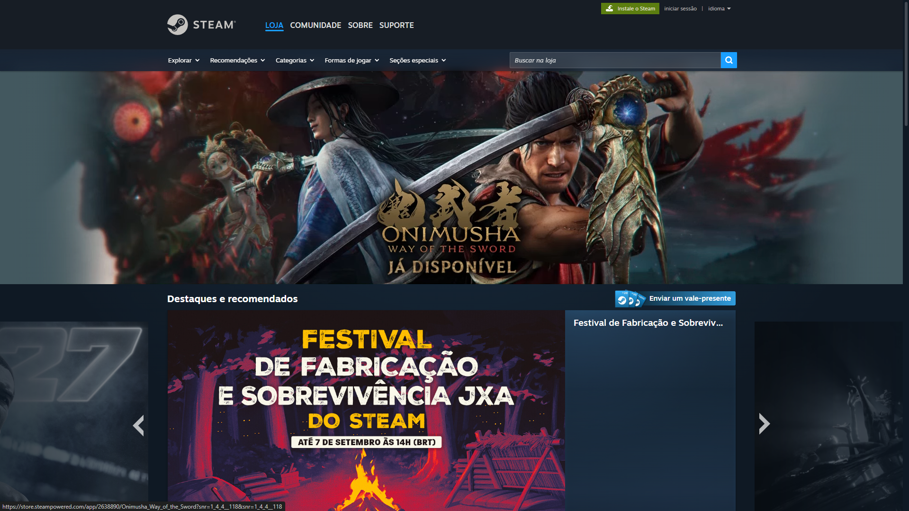

I
Análise heurística
As 10 heurísticas de Nielsen, com nota de 0 a 4 por heurística (0 = sem problema, 4 = problema catastrófico), no formato de severidade de Nielsen.
steam_ux_audit.pkg
Descompactando avaliação · Parte 2
Trabalho acadêmico · avaliação de produto
A Steam é uma interface densa, acumulada em camadas por mais de 20 anos. Este site pega essa interface e a desmonta em público — da superfície polida até o esqueleto estrutural.
02
Um card da loja: arte cheia, brilho, reflexo, avaliação colorida. É o que a Steam mostra.
A imagem some. Restam o retângulo, as linhas de grid, a bounding box e os rótulos de espaçamento. É o que sustenta o card.
O card se separa em arte, título, preço, tags e avaliação — cinco decisões independentes empilhadas em um espaço só.
Essas cinco camadas são as colunas deste site. Cada uma vira uma pergunta da avaliação.
03
A Steam é uma plataforma da Valve, no ar desde 2003. Começou como um sistema de atualização dos jogos da própria Valve e virou a maior loja de jogos para PC do mundo. Hoje acumula pelo menos cinco produtos dentro de uma casca só, construídos em épocas diferentes, por times diferentes, com linguagens visuais diferentes — e nunca reunificados de verdade.
Catálogo, descoberta, vitrine, promoções.
Instalar, atualizar, executar, gerenciar arquivos.
Amigos, chat, grupos, perfis, transmissões.
Workshop, guias, reviews, Mercado da Comunidade.
SteamOS, Steam Deck, Big Picture, Steam Machine.
Quase todo problema de interface da Steam é consequência de cinco produtos disputando o mesmo espaço de navegação.
Painel ao vivo de store.steampowered.com/about, 6 set 2026: 39.990.323 online e 12.548.957 em jogo naquele instante. O recorde de simultâneos foi reportado por GameSpot e Notebookcheck a partir do SteamDB — confirmar em steamdb.info/charts. A busca da loja exclui ainda 9.705 jogos por preferências de conteúdo. A página institucional da Steam continua dizendo "quase 30.000 jogos": a própria Steam subestima o tamanho do seu catálogo.
A Steam é um marketplace de três lados. Passe o mouse ou o foco em cada lado para ver que incentivo ele impõe à interface.
Jogador quer achar algo bom para jogar, pelo menor preço. Impõe à interface: filtro, prova social, comparação.
Desenvolvedor quer ser encontrado no meio de milhares de lançamentos. Impõe à interface: espaço na vitrine, tags, wishlist.
Valve quer comissão sobre o GMV e retenção da conta. Impõe à interface: descoberta que converte e lock-in.
A wishlist costura os três lados: "salvar para depois" para o jogador, principal sinal de demanda pré-lançamento para o desenvolvedor, gatilho de e-mail de promoção para a Valve. Ela não está em destaque porque é útil — está em destaque porque é a métrica que sustenta o negócio dos três lados ao mesmo tempo.
A home da Steam não é uma home de loja. É um leilão de atenção com regras editoriais. Isso explica a densidade — e explica por que "simplificar a home" é ingênuo sem uma resposta para "onde os 15 mil lançamentos anuais vão aparecer, então?".

Atualizações recentes · abril de 2026
A Valve entregou arte de jogos em resolução mais alta e uma home mais larga e responsiva; a navegação da loja unificou a antiga barra azul superior com a sidebar em um menu único e persistente; o Workshop ganhou filtros sem recarregar página e buscas salvas. São melhorias reais e incrementais — e a crítica recorrente de que descoberta e busca continuam mal resolvidas não foi endereçada por elas.
04
Para não virar opinião, a avaliação usou quatro instrumentos. Cada integrante avaliou em separado antes de consolidar — uma avaliação heurística com três a cinco avaliadores encontra a maior parte dos problemas de usabilidade de um produto.
I
As 10 heurísticas de Nielsen, com nota de 0 a 4 por heurística (0 = sem problema, 4 = problema catastrófico), no formato de severidade de Nielsen.
II
Quatro tarefas cronometradas e contadas em cliques: comprar um jogo; instalar e jogar; encontrar um jogo por critério ("RPG cooperativo local abaixo de R$ 40"); pedir reembolso.
III
WCAG 2.2 nível AA: contraste medido, navegação só por teclado, redimensionamento de texto, movimento.
IV
Epic Games Store, GOG Galaxy, itch.io, Xbox App, PlayStation Store.
05 · Pergunta 1
É fácil para o que você já sabe fazer, e difícil para tudo o que você faz raramente.
6 passos / 2 decisões para entrar; 9 passos / 4 decisões para sair — e mais a tela de login, se a sessão tiver expirado. A assimetria é o argumento.
O caminho principal — descobrir → comprar → instalar → jogar — é curto e previsível. Um botão primário por tela, sempre da mesma cor, com estado de progresso sempre visível. Vinte anos de repetição criaram um modelo mental que quase não falha.
O download tem feedback exemplar: velocidade, tempo restante, fila reordenável, pausa. É o melhor exemplo de visibilidade do status do sistema da plataforma inteira.
Destaque, recomendados, especiais, novidades, categorias, transmissões, curadoria, top vendas — dezenas de alvos com o mesmo peso visual. Pela Lei de Hick, o tempo de decisão cresce com o número e a complexidade das opções. Para o veterano isso é bom; para o novo é paralisante. A Steam otimizou para o veterano.
"RPG cooperativo local abaixo de R$ 40 que roda em máquina fraca": a busca responde bem a nome de jogo e mal a intenção. Os filtros estão espalhados entre busca avançada, página de tags e fila de descoberta — três lugares para a mesma intenção. E as tags são da comunidade, o que gera ruído.
Há preferências no cliente, na conta pelo site, por jogo (Propriedades) e no perfil da comunidade. "Desativar atualização automática de um jogo" exige saber que isso mora em Propriedades do jogo, não em Configurações. A arquitetura reflete a estrutura interna do produto, não a tarefa do usuário — a Lei de Conway virando interface.
Comprar leva poucos cliques. Pedir reembolso leva uma árvore de decisão dentro do Suporte, com perguntas em cadeia. A assimetria entre a facilidade de entrar e a dificuldade de sair é o achado mais forte desta seção — e só aparece quando se mede fluxo em vez de olhar tela.
O cliente desktop e o site são parecidos, não iguais: páginas que existem em um e não no outro, navegação diferente, o botão "voltar" que às vezes volta. O cliente é um navegador embutido, e isso vaza para o usuário como latência e inconsistência.
Instale a Steam pela primeira vez: você cai na loja sem orientação sobre biblioteca, wishlist, fila de descoberta, reembolso ou família. A plataforma assume que você já a conhece. Funcionou por inércia — é uma dívida séria.
| Tarefa | Cliques | Decisões | Tempo | Sucesso sem ajuda |
|---|---|---|---|---|
| Comprar um jogo | 5–6 | 2 | ~40 s | sim |
| Instalar e jogar | 4–5 | 1–2 | + download | sim |
| Achar jogo por critério | 8–10 | 4 | 2–4 min | parcial |
| Pedir reembolso | 9–11 | 4–5 | 2–3 min + fila de análise | condicional |
"Achar jogo por critério" fica em parcial porque a tag "Co-op local" não aparece na lista de tags da busca — é preciso saber digitá-la no campo "Filtrar por tag". O controle de preço é um slider que vai só até R$ 120. "Pedir reembolso" é condicional: depende de estar dentro da política (menos de 2h jogadas e 14 dias) e de a análise ser aprovada.
Veredito · Positivo com ressalvas
Fácil no caminho feliz, hostil fora dele.
06 · Pergunta 2
No nível do componente, sim — e muito bem. No nível do sistema, não.
![Captura da página de produto de
Red Dead Redemption 2 na loja Steam, em português: trilha superior, breadcrumb,
área de mídia com trailer, coluna direita com resumo de análises ('Muito positivas'
/ 'Extremamente positivas em pt-BR'), data de lançamento, desenvolvedora e os
marcadores da comunidade; abaixo, o aviso 'Inicie a sessão para adicionar à lista
de desejos, seguir ou ignorar' e o bloco de compra em PROMOÇÃO ESPECIAL, com o
selo -75%, o preço cheio R$ 299,90 riscado ao lado de R$ 74,97 e o botão verde
'+ Carrinho'. Captura do grupo, 6 set 2026.](public/img/steam-product-page.png)
comunica com excelência
Um dos melhores componentes de visualização de dados em produto de consumo que existe. Combina rótulo em linguagem natural ("Muito positivas"), percentual, contagem absoluta, separação entre recentes e totais e — ao expandir — um gráfico temporal que mostra quando a percepção mudou. Responde "isso é bom?" e "isso mudou?" com o mesmo componente.
comunica com excelência
Ação primária sempre da mesma cor, sempre no mesmo lugar da hierarquia. Custa nada e resolve tudo. Ressalva medida: o texto branco sobre o verde tem contraste de 2,04:1 — abaixo do mínimo de 3:1 até para texto grande. O componente comunica bem, mas falha o critério.
atrapalha
Nesta captura, sem sessão iniciada, o espaço vira só o aviso "Inicie a sessão para adicionar à lista de desejos, seguir ou ignorar". Logado, aparecem três ações parecidas, com significados diferentes, e a interface não explica a diferença em lugar nenhum. Boa parte dos usuários usa a wishlist como "gostei" e nunca descobre que "Seguir" existe para receber notícias sem sinalizar intenção de compra.
atrapalha
Nesta captura: R$ 299,90 riscado ao lado de R$ 74,97, com o selo -75% e "Oferta válida até 8 de setembro". É ancoragem de preço com prazo — o valor antigo serve de referência para o novo parecer barato, e o contador reforça a urgência. Medimos o preço riscado da Steam em 2,64:1 de contraste, bem abaixo do mínimo: a informação que mais pesa na decisão fica no canal visual mais fraco.
atrapalha
Preenchidas pela comunidade: geram ruído (jogos marcados como "Souls-like" por marketing, não por gênero) e não substituem um sistema de gênero confiável.
Selecione um hotspot numerado sobre a captura. Os toggles acima aplicam grayscale e um filtro de deuteranopia à imagem — a prova visual da dependência de cor, feita ao vivo.
A barra de avaliações. Rótulo em linguagem natural, percentual, contagem absoluta, recentes contra totais e um gráfico temporal ao expandir. Responde "isso é bom?" e "isso mudou?" no mesmo componente.
O botão verde. Ação primária sempre da mesma cor, sempre no mesmo lugar da hierarquia. Custa nada e resolve tudo.
Estados de sistema. Baixando, atualizando, jogando, offline, na fila — todos com representação visual distinta e persistente. O usuário sempre sabe o que a máquina está fazendo.
Requisitos de sistema. Padronizados e na mesma posição em toda página de produto. Consistência estrutural é o que permite comparação.
Loja, Comunidade, [seu nome], Biblioteca. Dentro de Comunidade: Início, Discussões, Workshop, Mercado, Transmissões. Nada disso é uma tarefa do usuário — são produtos internos da Valve virados em itens de menu. "Vender um item que ganhei" mora em Comunidade > Mercado, e não em Biblioteca ou no Inventário. O nome do lugar não descreve o que se faz lá.
Lista de desejos, Seguir e Ignorar convivem na página de produto, alteram o que você vê depois de formas diferentes, e a diferença não é explicada.
Sentimento de avaliação, estado de amigo (online / ausente / jogando), disponibilidade de item — muito é codificado por cor. Alguns lugares reforçam com texto, outros não. Em capsules pequenas e listas compactas, a cor às vezes é o único canal. Isso viola o critério WCAG 1.4.1 (Uso de cor).
Coexistem hoje, na mesma sessão, pelo menos quatro gerações de interface: a loja renovada, as páginas antigas de comunidade e perfil (que ainda parecem 2011), o Big Picture / Deck e o chat. Fontes, densidades e botões diferentes. O custo não é estético: é cognitivo — cada vez que a linguagem muda, o usuário reaprende.
Filtros da biblioteca, itens do inventário, links do rodapé de conta — muitos elementos com texto de 11–12px e área de clique justa. Em 1440p ou 4K sem escalonamento, vira problema real. A configuração de escalonamento de texto existe, mas o resultado é irregular e o layout desalinha.
| Critério | O que verificamos | Resultado |
|---|---|---|
| 1.4.3 Contraste mínimo | rácio de contraste de amostras de texto, calculado a partir das cores computadas | Falha — preço riscado 2,64:1; contagem de reviews 4,18:1; texto do botão verde de compra 2,04:1 (mín. 3:1 p/ texto grande) |
| 1.4.1 Uso de cor | há rótulo textual junto de todo estado codificado por cor? | Falha parcial — sentimento de review e status de amigo dependem de cor; em capsules e listas compactas não há reforço textual |
| 2.1.1 Teclado | percorrer a loja só com Tab / Enter | Falha parcial — navegável, mas axe aponta 8–9 nested-interactive e 8 links sem nome acessível por página de produto |
| 2.4.7 Foco visível | o indicador de foco aparece em todos os controles? | Falha — links da navegação principal (Loja, Comunidade, Suporte) com outline-style: none e nenhum substituto |
| 1.4.4 Redimensionar texto | zoom 200% sem rolagem horizontal (1.4.10 Reflow) | Falha — a página de produto transborda para ~1,9× a largura da viewport a 200% |
| 2.2.2 Pausar movimento | trailers e sliders com controle de pausa? | Falha — o trailer inicia em autoplay sem controles visíveis; o slider de mídia roda sozinho |
| 2.5.8 Tamanho do alvo | alvos de no mínimo 24×24 CSS px | Falha — axe aponta 4–7 alvos abaixo de 24 px por página (resumo de avaliações, nota agregada, links de desenvolvedor) |
Erros críticos recorrentes fora da tabela: 12–21 imagens sem texto alternativo e 33–41 atributos ARIA inválidos por página de produto. A home tem menos problemas de estrutura, mais de contraste. O grupo deve reproduzir a auditoria antes da entrega e atualizar a data — o método está descrito acima e é replicável.
Veredito · Misto
Componentes brilhantes dentro de um sistema desorganizado.
07 · Pergunta 3
Sim — mas é importante separar "quero" de "não consigo sair". Essa distinção é o que diferencia uma análise de produto de uma resenha.
Cada etapa tem um mecanismo de interface dedicado: contador regressivo de promoção, preço antigo riscado ao lado do novo (ancoragem), percentual de desconto (a Steam usa verde-ação aqui; nós reservamos essa cor), "X pessoas jogando agora" (prova social), badge de "Escolha dos curadores".
Retenção por valor 50
biblioteca que funciona, promoções reais, reviews da comunidade, reembolso que existe, Workshop e guias de graça, Steam Deck e Big Picture na mesma conta.
Retenção por custo de troca 50
biblioteca não portável, conquistas e tempo de jogo não transferíveis, lista de amigos que não vai embora junto, itens de inventário com valor de mercado real. Efeito de dotação: a Valve mantém tudo isso sempre visível.
A biblioteca funciona: instala, roda, atualiza, sincroniza save na nuvem.
Preço: promoções sazonais reais e agressivas.
Reviews da comunidade: ninguém compra às cegas.
Reembolso existe e funciona, mesmo com fluxo ruim — reduz o risco percebido de comprar.
Workshop e guias: valor gerado por outros usuários, de graça.
Steam Deck e Big Picture: a mesma conta atravessa contextos de uso diferentes.
A biblioteca não é portável. Anos de compras não migram para outro lugar.
Conquistas, tempo de jogo, nível de perfil, cartas e badges — capital social não transferível.
A lista de amigos está lá, e os amigos não vão embora junto.
Itens de inventário com valor de mercado real.
Padrões escuros? Leves, mas existem
Escassez artificial (contador de fim de promoção quando a promoção é sazonal e previsível), ancoragem de preço, carrinho que sugere itens adicionais. Mas é preciso ser justo: não há assinatura escondida, não há cancelamento sabotado, não há loot box disfarçada na plataforma em si, e o reembolso é uma política pública e real. Comparada à média do mercado de jogos, a Steam é acima da média em ética de interface. Uma crítica que não reconhece isso perde credibilidade.
Se a biblioteca fosse portável amanhã, quantos usuários ficariam? Ninguém sabe. E é exatamente isso que torna a pergunta interessante.
Veredito · Muito positivo
Com a ressalva de que boa parte da fidelidade é estrutural, não conquistada pela experiência.
08 · Pergunta 4
Cada proposta segue problema → hipótese → solução → métrica. Sem métrica, é gosto pessoal.
Veredito · Espaço para produto, não para estética
O desafio de design mais interessante da Steam hoje é arquitetura da informação e descoberta em escala.
09
Os tópicos extras que a atividade pede. Arraste, use as setas ou o teclado.
10 · Veredito final
A Steam é uma plataforma excelente no nível do componente e mediana no nível do sistema. Resolve muito bem os problemas que resolveu primeiro — comprar, baixar, jogar, avaliar — e carrega vinte anos de camadas acumuladas em tudo que veio depois. Retém usuários por uma mistura de valor genuíno e custo de troca alto, e o desafio de design mais interessante que enfrenta hoje não é estético: é de arquitetura da informação e de descoberta em escala.
11
Autoauditoria deste site